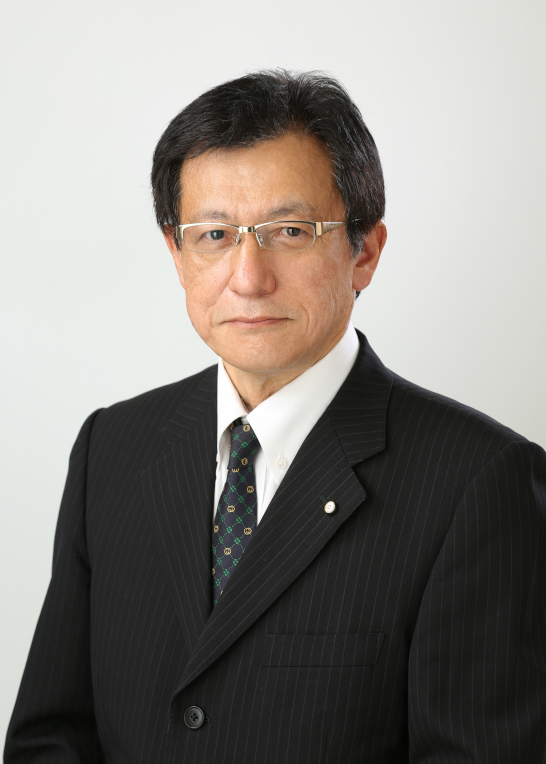

久留米歯科医師会
会長 首藤 俊介
久留米歯科医師会のホームページにアクセスして頂きありがとうございます。
福岡県南に位置する久留米市は人口３０万人を超える中核都市として商都、交通の要所として発展を遂げております。
その久留米市におきまして久留米歯科医師会は明治４０年設立以来１１０年以上の歴史があり、これまで地域の皆様の口腔衛生の向上に微力ながら貢献させていただいて参りました。
現在会員数は１６０名を超え、昭和５５年開設の福岡県南、筑後地方唯一の歯科衛生専門学校を併設し歯科衛生士の教育、育成にも力を注いでおります。
昨今、食育を通じた口腔保健の大切さが言われており、国による歯科口腔保健の推進に関する法律に関連し、福岡県においても平成２５年３月２９日に福岡県歯科口腔保健の推進に関する条例が公布、施行されております。
久留米歯科医師会は久留米市行政の御協力のもと「１歳児歯科健診（１歳児初めての歯の健康教室）」、母子保健法に基づく「１歳６ヶ月、３歳児歯科健診」、健康増進法に基づく「４０歳、５０歳、６０歳、７０歳の歯周疾患検診（歯っぴぃ検診）」、「休日急患歯科診療」等をおこない地域の皆様の口腔衛生ひいては全身の健康の増進のため貢献することを念願としております。
久留米歯科医師会の対外的事業では、地域の皆様の口腔衛生の向上、啓発を目的に６月に「歯の健康フェスタ」、１１月に「親子クッキング」、在宅訪問歯科連携室事業、歯科保健教育・相談事業、心身障害者（児）歯科健診、県民健康づくりセミナー等を行っております。詳しくはホームページ上または久留米歯科医師会事務局までお問合せいただき、是非関連事業にご参加頂くようお願いいたします。
今後ともこのホームページを通して地域の皆様の口腔衛生の向上に寄与できることを願っております。